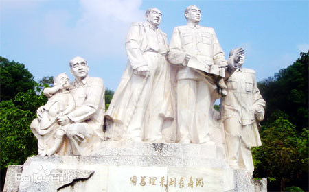
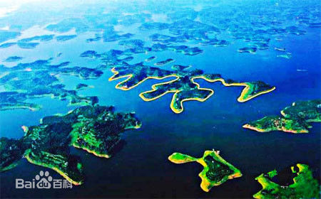

长寿湖简介
长寿湖是重庆市最大的湖泊旅游风景区，六、七十年代长寿湖就已被列为重庆市十佳旅游风景区，
1992年元月3日重庆市人民政府批准长寿湖景区为省级风景名胜区，1997年命名为重庆市新巴蜀十二景之一“长湖浪屿”，
已纳入“魅力重庆一日游”旅游线路。
长寿湖国家级生态旅游休闲度假区，重庆市十佳旅游风景区，是著名小说《红岩》的创作地，是顶峰国际规划设计公司2010年旅游规划项目，
位于素有“寿星之乡”的重庆市长寿区境内，距重庆主城区100公里，距长寿城区26公里。长寿湖是三峡国际旅游热线黄金水道的重要节点，
也是长寿区旅游业发展的龙头景区，以其“岛湖风光”、“长寿文化”、“乡土文化”享誉四方，被誉为重庆的中心花园。
长寿湖是“一五”期间重点工程狮子滩水电站拦河大坝建成以后而形成的人工淡水湖，水域面积65.5平方公里（约10万亩），库容10亿立方米，
是我国西南地区最大的人工湖。203个大小岛屿星罗棋布，湖湾岛汊交织，浅滩成片，建有野生动物自然保护区，栖息着42种鸟类、28种水禽。
2012年12月，长寿区长寿湖风景区正式被国家旅游局批准为国家AAAA（4A）级风景名胜区。
主要景点
【水立方】：长寿湖由长寿区1江、2湖、3河、13溪做水源补给，形成65平方公里中央湖泊，水资源得天独厚，发展观光旅游、水上运动、生态居所等项目前景广阔。
【童话岛】：长寿湖湖面辽阔，碧波万顷，203个岛屿星罗棋布、散布其间，是度假、会务、居住的天然王国，也是旅游、休闲项目开发的财富王国。
【自然界】：长寿湖湖区呈“Y”字型发散，湖汊、内湾众多，岸线蜿蜒曲折、岸线平缓宜人，包含多个原生态自然保护区，在青山绿水间养生，
在智力/资金密集型产业园中创造绿色财富，实现湖区经济崛起。
【风景区】：拥有3000年历史仙逸风骨，200多处文化遗址，300多处游览胜地。包括秦代怀清台遗址、宋代张飞庙、明代东林寺、清代文峰塔，
周恩来长寿视察雕塑，及茂林修竹、溶岩龙洞、凛冽矿泉、飞瀑湍流等众多旅游景点。
【湖区展望】
东岸：背靠湖区山脉，环境宜人，半岛由纵深呈梯度排列，拥有宽广的视野和曲折的湖岸。（规划为科技商务会务旅游区和旅游地产区）
南岸：岸线平整连贯，地势平缓，包括整个长寿湖镇范围和长寿湖景区主坝，纵深为生态河谷湿地。现已经成为长寿湖景区的接待中心，以形成基本接待能力。（规划为高级旅游服务及商业配套区）
西岸：岸线拥有长寿湖湖面最宽阔的区域，湖岸坡度平缓，岸线宜人，土地利用率高，为长寿湖观景的最佳区域。（规划为休闲度假及旅游地产区）
北岸：湖汊、内湾丰富，多岛屿、半岛，亲水性好，向北多缓坡地带，是长寿湖原生态之精华。（规划为智力/资金密集型生态产业公园）
气候生态
充沛的雨量为各种动植物生长繁衍提供了理想场所。长寿湖内植被以亚热带常绿阔叶林与针叶林为主，主要树种有水杉、银杏、越桂、沙田柚和夏橙等。
动物主要以亲水类为主，数量种类繁多。景区内建有野生动物自然保护区，常年栖息鸟类33属、42种，其中水禽28种，数量达15600余只。
湖区有国家二级保护动物绿头鸭、风头鸭、斑嘴鸭、秋沙鸭等四种，此外还有天鹅、野鸳鸯等珍稀鸟类。
长寿湖中大小岛屿203个，星罗棋布，大如山峦，小似弹丸，形状各异。多数植被良好，森林茂密；有的已劈为果园、园林、景点，有的则荒岭秃滩；
有的保持原有农田、梯土和植被风光，住有农家、渔舍，或耕耘劳作、或捕鱼种果；还有的已开发建成为旅游景区、景点，设有宾馆、茶社、农家乐及各种游乐设施，
供游人赏景、游乐。
历史沿革
长寿湖因上个世纪50年代人工拦截龙溪河，建设“一五”期间重点水利工程狮子滩水电站而成。重庆市的中部的偏北方向，有一条河流由北而南蜿蜒流过，这便是龙溪河。
龙溪河发源于重庆市梁平县境内，流经梁平、垫江、长寿三个地方，最后在长寿区城郊羊角堡附近汇入长江，全程170余公里，流域面积3348平方公里,平均流量54立方米/秒。
龙溪河流经长寿区境内的狮子滩后，河床悬崖跌落，水流陡险滩多，形成多级瀑布，水能蕴藏量极为丰富。整个龙溪河流域建有四座梯级水电站，总装机容量11.2万千瓦。
狮子滩水电站是开发龙溪河流域的第一级水电站，该电站为中国“一五”期间苏联援助的156个重点建设项目之一，与北方的丰满水电站齐名，当时流传着“北有小丰满，
南有狮子滩”的说法。1954年春，国家成立电力工业部狮子滩水力发电工程局。1954年8月1日，狮子滩水电工程开挖第一锄泥土，正式奠基开工。这一工程前后历时4年，
共开挖土石方189万立方米，浇筑混凝土36万余立方米，移民39000余人。1957年3月，狮子滩发电站工程全部建成投产，总装机容量4.8万千瓦。
从此，西南地区最大的人工湖长寿湖，便展现在人们面前。
在长寿湖，记录了中国水电事业艰苦卓绝的发展历程，开创了中国水电史上梯级开发的先河，为中国水电事业培养、造就和输送了一大批建设人才和管理人才，
被誉为新中国水电专家的摇篮，在中国水电史上留下了不朽的辉煌篇章。上个世纪之初，共和国元帅刘伯承丰都血战后曾在长寿湖畔养伤。解放后，
党和国家领导人周恩来、朱德、李富春、李先念等都在此留下了足迹，长寿湖形成了以水利为表现形式的红色文化。
交通信息
1.自驾车：
A.从重庆出发，经江北收费站，沿G50沪渝高速公路，在长寿不下高速公路，直接往万州方向行驶，在“长寿湖”路口分道，最后到达长寿湖（狮子滩镇）。全程高速路，整个行程在60分钟左右。
B.从上海、万州方向出发，沿G50沪渝高速公路，大约在1690公里左右“长寿湖”路口分道，直达长寿湖（狮子滩镇），全程高速路。
2.交通大巴：
从重庆朝天门或红旗河沟长途汽车站出发，经过江北收费站，沿G50沪渝高速公路，到达长寿骑鞍汽车站，车费30多元。转乘到长寿湖的高速路中巴，直达长寿湖（狮子滩镇），车费约8元。整个行程大约80分钟。
总理足迹

1958年3月15日，正是周恩来总理60寿辰的日子。周总理和李富春，李先念副总理
，从武汉乘船而上，视察长江三峡水力资源，专程视察了龙溪河、长寿湖。他们察工地、走湖区、进厂房、入宿舍，足迹踏遍了龙溪河。
当他们视察结束，来到时为外宾招待所（今狮子山庄）吃完午饭后，电站的同志请周总理和二位副总理题词留念时，周总理和二位副总理欣然提笔，
留下了光辉的题词。为纪念周恩来总理和李富春、李先念副总理视察狮子滩、长寿湖并题词，狮子滩发电站在长寿湖修建了总理纪念亭——红星亭。
天赐长寿

长寿湖中天然岛屿组成的巨大魏碑体“寿”字，长约1280米，宽约704米，乃天赐长寿。长寿湖繁写魏碑体“寿”字，笔力起伏跌宕，
笔锋刚劲有力，笔画简约明快，结构疏密相宜，达到了神采、气韵和意境的完美统一，可谓天赐的书法珍品。整个“寿”被茂密的夏橙、
血脐和沙田柚树包裹，一年四季花果飘香。每当枯水时节，水位下降现出消落带时，“寿”字恰似一条金色腰带萦绕的巨轮，漂浮在浩瀚的湖面。